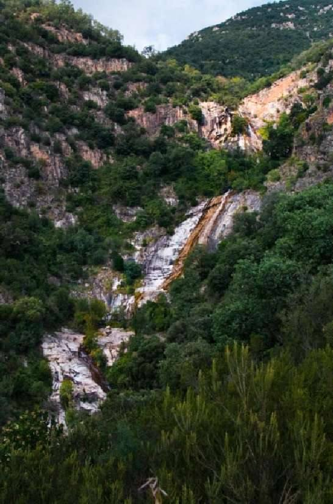

Visita · Gualba
Poc abans d'arribar al pla, la riera de Gualba es despenja pel salt de Gualba : l'aigua baixa graó a graó, en tres trams seguits, fins a salvar 133 metres de desnivell. L'escuma blanca que fa…